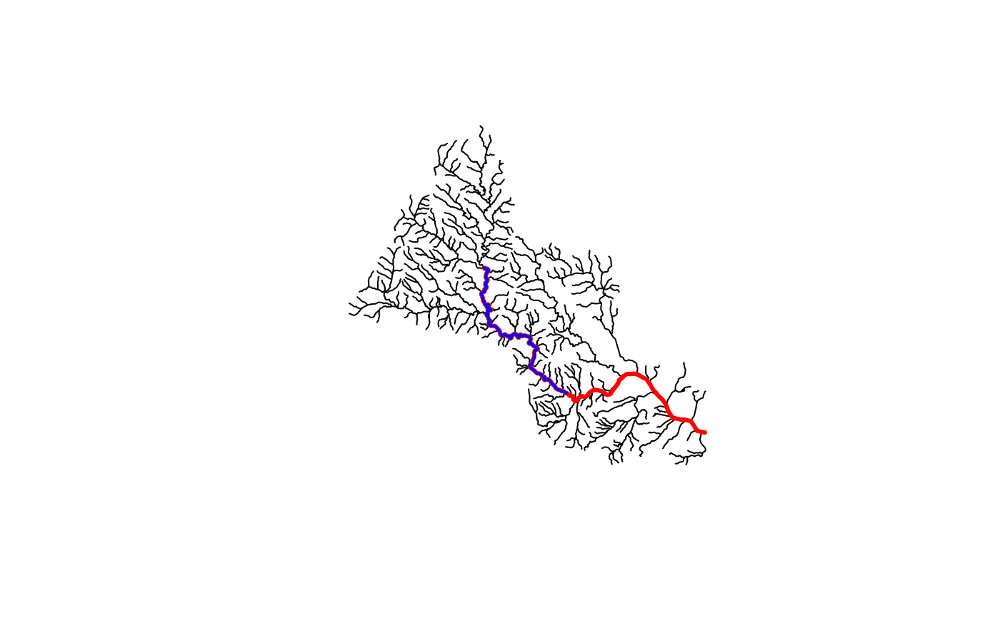

Traverse NHDPlus network downstream main stem
get_DM(network, comid, distance = NULL, sort = FALSE, include = TRUE)| network | data.frame NHDPlus flowlines including at a minimum: COMID, LENGTHKM, DnHydroseq, and Hydroseq. |
|---|---|
| comid | integer identifier to start navigating from. |
| distance | numeric distance in km to limit how many COMIDs are returned. The COMID that exceeds the distance specified is returned. |
| sort | if TRUE, the returned COMID vector will be sorted in order of distance from the input COMID (nearest to farthest) |
| include | if TRUE, the input COMID will be included in the returned COMID vector |
integer vector of all COMIDs downstream of the starting COMID along the mainstem
library(sf)
source(system.file("extdata", "sample_flines.R", package = "nhdplusTools"))
plot(sample_flines$geom)
start_COMID <- 11690092
DM_COMIDs <- get_DM(sample_flines, start_COMID)
plot(dplyr::filter(sample_flines, COMID %in% DM_COMIDs)$geom,
col = "red", add = TRUE, lwd = 3)
DM_COMIDs <- get_DM(sample_flines, start_COMID, distance = 40)
plot(dplyr::filter(sample_flines, COMID %in% DM_COMIDs)$geom,
col = "blue", add = TRUE, lwd = 2)
